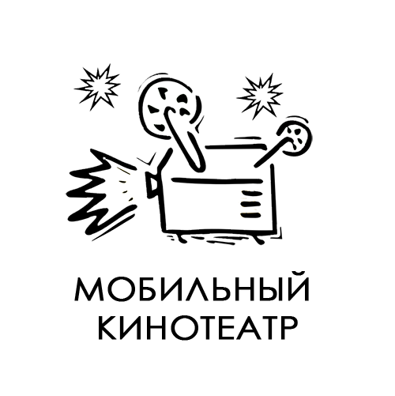

История проекта:
В марте 2014 года командой арт-студии "Ступень" был представлен проект мобильного кинотеатра под открытым небом в г. Мытищи на гранд фонда "Строим будущее". В апреле состоялось голосование. Наш проект одержал уверенную победу. Далее последовали организационные моменты, и 19 июля 2014 года кинотеатр начинает свою работу! Проект для нашего города новый, и, можно сказать, только начинается проверка его на прочность.состоялся первый показ.
Цель проекта:
К настоящему моменту в кинотеатре прошли творческие встречи, кинопоказы, мастер-классы, тематические вечера и многое другое...
Целевая аудитория – это все жители города, особое внимание проект уделяет маломобильным слоям населения.
Структура кинотетра:
Мобильный кинотеатр – это лёгкая передвижная конструкция уличного кинозала на 50 сидячих мест. Конструкция кинотеатра – это надувной экран, 50 кемпинговых кресел и небольшая палатка киномеханика.
Кинотеатр оснащен системой стереозвука и обеспечивает Full HD качество изображения.
.jpg)
.jpg)